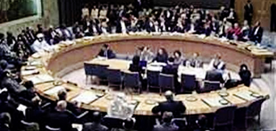
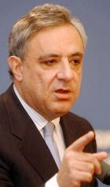
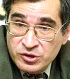

Кавказский Центр Миротворческих Инициатив представляет один из актов перманентной трагикомедии нашей реальности. Просто подборка публикаций, без комментариев.

ТОЛЕРАНТНАЯ КСЕНОФОБИЯ
И КСЕНОФОБНАЯ ТОЛЕРАНТНОСТЬ. ПЕРМАНЕНТНАЯ ТРАГИКОМЕДИЯ

Министр иностранных дел Армении Вардан Осканян:
Для нашего народа толерантность это образ жизни, способ существования. Мы должны быть флагманами в борьбе с ксенофобией.
Для нашего народа толерантность это образ жизни, способ существования. Мы должны быть флагманами в борьбе с ксенофобией.
ПРАВИТЕЛЬСТВО ФИНАНСИРУЕТ НАУЧНУЮ КОНФЕРЕНЦИЮ ПО ПРОБЛЕМАМ КСЕНОФОБИИ
Правительство Армении приняло решение выделить из резервного фонда 9 млн. 872 тыс. 900 драмов для проведения 25-26 февраля в Ереване научной конференции Проблемы толерантности и ксенофобии в Южнокавказском регионе (Сумгаит-20).
Panorama.am, 22.02.2008
«ТОЛЕРАНТНОСТЬ И КСЕНОФОБИЯ В ЮЖНОКАВКАЗСКОМ РЕГИОНЕ» - МЕЖДУНАРОДНАЯ НАУЧНАЯ КОНФЕРЕНЦИЯ В ЕРЕВАНЕ
Сегодня, 25 февраля, в Ереване началa работу международная научная конференция “Толерантность и ксенофобия в Южнокавказском регионе”, приуроченная к 20-летию сумгаитских погромов.
На открытии конференции с вступительной речью выступил Айк Демоян - директор Музея-института геноцида армян.
В конференции приняли участие министр иностранных дел РА Вардан Осканян, президент Национальной академии наук Армении Радик Мартиросян, активист карабахского движения, публицист Зорий Балаян, президент Российского общества дружбы и сотрудничества с Арменией Виктор Кривопусков, директор российского информационно-аналитического центра “Сова” Александр Верховский, член комитета российской интеллигенции “Карабах”(КРИК) Инесса Буркова и многие другие.
Вардан Осканян, коснувшись в своей речи недавних президентских выборов, отметил, что в то время, как во внешнем политическом поле перед нами стоят серьезные проблемы, некоторые силы внутри страны заняты насаждением атмосферы нетерпимости к своим политическим оппонентам. Это отрицательно влияет не только на внутриполитическую обстановку, но и на позиции Армении на международной арене.
Зорий Балаян обратился к теме армянских погромов 1988 годa в Сумгаите и выразил озабоченность тем, что сегодня мало говорится об этих событиях. Представителям старшего поколения кажется, что о сумгаитской трагедии и так все знают, но надо понимать, что в стране выросло новое поколение, которое ничего не слышало о феврале 1988 года.
В ходе конференции состоялась также презентация книги Айка Демояна “Освещение нагорно-карабахского конфликта западной прессой 1988-1990 гг.”
Конференция организована по инициативе Национальной Академии наук Армении и Музея-института геноцида армян и проводится при поддержке Министерства иностранных дел РА.
Анна Вртанесян, Genocide.ru, 25.02.2008
В. ОСКАНЯН: МЫ НЕ МОЖЕМ ПОЗВОЛИТЬ СЕБЕ РАСКОЛ
В условиях, когда не решен карабахский конфликт, мы не имеем права вносить раскол в народ, считает министр иностранных дел Армении Вардан Осканян. Как сообщил он сегодня на открытии международной конференции «Толерантность и ксенофобия в южнокавказском регионе», единственный ресурс Армении – это его народ и единство этого народа. «Для нашего народа толерантность – это образ жизни, способ существования», - заметил В. Осканян.
По словам министра, нетолерантность привела к серьезным проблемам не только в регионе, но и во многих странах мира. «Геноцид – самое крайнее проявление нетолерантности. Мы должны быть флагманами в борьбе с ксенофобией», - сказал он.
Panorama.am, 25.02.2008
Член Союза писателей и журналистов РФ, почетный член СП РА, председатель Российского общества дружбы и сотрудничества с Арменией В. Кривопусков:
Сумгаит, фактически является продолжением политики Турции, воплощающей идеи Великого Турана в условиях Советского Союза.
Сумгаит, фактически является продолжением политики Турции, воплощающей идеи Великого Турана в условиях Советского Союза.
ТОЛЬКО ПОКАЯНИЕ РУКОВОДСТВА АЗЕРБАЙДЖАНА ПОЗВОЛИТЬ НАЛАДИТЬ ДИАЛОГ С АРМЕНИЕЙ - МНЕНИЕ
Только покаяние руководства Азербайджана может привести к устранению ксенофобии и установлению диалога с Арменией. Такое мнение выразил в понедельник член Союза писателей и журналистов РФ, почетный член Союза писателей Армении Виктор Кривопусков.
«Эту проблему нужно рассматривать не только как межэтническую, но и как историческую. Сумгаит, фактически является продолжением политики Турции, воплощающей идеи Великого Турана в условиях Советского Союза», - сказал Кривопусков на стартовавшей в Ереване в понедельник двухдневной международной конференции «Проблемы толерантности и ксенофобии в регионе Южного Кавказа», посвященной 20-ой годовщине погромов армян в Сумгаите (Азербайджан).
www.hayinfo.ru, 25.02.2008
АРМЕНИЯ И РОССИЯ ДОЛЖНЫ ПРОТИВОСТОЯТЬ ИНФОРМАЦИОННОЙ АГИТАЦИИ АЗЕРБАЙДЖАНА - РОССИЙСКИЙ ПИСАТЕЛЬ
Армения и Россия должны противостоять информационной агитации Азербайджана в вопросах истории. Такое мнение выразил в понедельник член Союза писателей и журналистов РФ, почетный член Союза писателей Армении, председатель Российского общества дружбы и сотрудничества с Арменией (РОДСА) Виктор Кривопусков.
«Сегодня в Азербайджане хорошо поставлена индустрия клеветы и лжи, а отсутствие публикаций армянских и российских историков приводит к распространению идей, которые пропагандирует эта страна», - сказал Кривопусков на проходящей в Ереване международной конференции «Проблемы толерантности и ксенофобии в регионе Южного Кавказа», посвященной 20-ой годовщине погромов армян в азербайджанском городе Сумгаит.
Он отметил, что в России активно публикуются и распространяются азербайджанские буклеты и книги, содержащие сфальсифицированную историю Азербайджана, Армении и России. «При этом эти книги читают не только азербайджанцы. Часто буклеты попадают в российские семьи, поскольку их подбрасывают в почтовые ящики», - сказал Кривопусков.
По его словам, РОДСА ведет активную работу в этом направлении и, благодаря стараниям организации, было пресечено множество случаев проявления антироссийских и антиармянских настроений со стороны азербайджанцев в РФ.
«Информационная война Азербайджана должна быть остановлена. Нельзя скрывать несправедливость и не противостоять ей», - резюмировал Кривопусков.
АМИ «Новости-Армения», 25.02.2008

Ректор Ереванского университета им. В. Брюсова, политолог Сурен Золян:
У Азербайджана нет собственной истории, его история это история геноцида
У Азербайджана нет собственной истории, его история это история геноцида
КСЕНОФОБИЯ - С СУМГАИТСКИХ ПОГРОМОВ
Вчера начала работу международная научная конференция «Толерантность и ксенофобия в регионе Южного Кавказа».
Говоря о вопросе погромов в Сумгаите, активист карабахского движения, публицист Зорий Балаян отметил: «Прежде чем говорить о будущем, мы должны сначала призвать к суду исполнителей геноцида, обратиться в международные инстанции. В противном случае, азербайджанцы вместо того, чтобы говорить о Сумгаите, будут говорить о Ходжалу.»
Политолог Сурен Золян во время представления доклада на тему: «Конфликт цивилизаций или межкультурный диалог: свобода слова и пределы толерантности», отметил: «У Азербайджана нет собственной истории, его история – это история геноцида».
Директор института философии, социологии и права АН Армении Геворк Погосян выразил свое удивление: «Армения – моноэтничная страна, хотя и здесь заметны проявления ксенофобии. Часто возникает вопрос: В отношении к кому она может быть проявлена? В отношении нацменьшинств, составляющих 3 процента? Странно, но мы сами в себе ищем врагов. Яркий пример этому то, что армян делят на уроженцев Армении, карабахцев, ахпаров (армян из диаспоры).»
Директор музея-института геноцида армян Айк Демоян, в свою очередь, представил в фактах антиармянскую политику азербайджанцев. Он привел цитату из учебника 11 класса для общеобразовательных школ Азербайджана, согласно которой, 11 декабря 1988 г. был взорван югославский самолет, потому что его перепутали с турецким. Следущим примером был портал Day.az. A. Демоян с ноября изучал их публикации и заметил: «Там каждый день бывает информация о том, что на армяно-азербайджанском фронте армяне нарушают. Каждый день они публикуют одну и ту же информацию, меняя лишь географию и фото».
Ответственный по Армении общественной организации по изучению армянской архитектуры Самвел Карапетян представил «Аравоту» в каком на сегодня состоянии находятся памятники армянской архитектуры на территории Азербайджана: «Даже в настоящее время разрушают. У Азербайджанцев комплекс самоутверждения на почве создания государства на захваченных и сожженных землях. Они создали страну на земле пропитанной другой культурой, и чувствуют свою чуждость. Все те памятники, которые они в 1960-ых провозгласили албанскими, сегодня разрушаются. Хотя бы могли быть добры и сохранить их.»
Татев Арутюнян, Аравот, 25.02.2008
В ЕРЕВАНЕ ПРИНЯТА
РЕЗОЛЮЦИЯ ПО НЕДОПУЩЕНИЮ НЕПРИМИРИМОСТИ И КСЕНОФОБИИ
По итогам международной конференции «Проблемы толерантности и ксенофобии в регионе Южного Кавказа, вызовы установлению мира и доверия» в Ереване принята резолюция, в которой содержится призыв к недопущению проявления нетерпимости в отношении истории и исторического наследия соседних стран и народов, а также переписывания истории. «Примером этого может служить варварское уничтожение армянского средневекового кладбища в Старой Джуге в Нахичеване в Азербайджанской Республике», - отмечается в резолюции.
Участники конференции рассматривают межкультурный диалог и взаимовлияние культур как один из предпочтительных путей установления атмосферы взаимного доверия и терпимости, который способствует замене культуры войны и реваншизма на культуру мира. «Мы призываем общества, а также правительства стран региона оказать всемерное содействие установлению межнационального мира и межрелигиозного согласия в регионе», - подчеркивается в принятом документе.
PanARMENIAN.Net, 25.02.2008
AHOUSEKEEPER: «ТОЛЕРАНТНОСТЬ И КСЕНОФОБИЯ»
В гостинице Марриот-Армения проходит сейчас конференция, организованная совместно Музеем-институтом геноцида армян, МИД и Академией Наук. Был там в первой половине дня, но досидеть до финала не смог из-за дел.
... Из интересного: познакомился с Виктором Кривопусковым. Договоренность о размещении «Мятежного Карабаха» у меня была давно, и на этот раз договоренность была подтверждена лично. У Виктора Владимировича планов громадье, и надеюсь они все рано или поздно будут осуществленны.
P.S. В кулуарах (хорошее выражение, правда?) прозвучала информация о планах создания в селе Ходжалы музея сумгаитских, кировабадских и бакинских армянских погромов. Довольно резкий ход, но в свете пропагандистской кампании, развернутой Азербайджаном, думаю, адекватный.
miacum.ru,gazeta, 26.02.2008